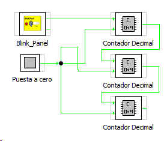

Este contador recibe impulso en su entrada y los cuenta en decimal de 0 a 9.
Posee dos entradas
reloj: por la que entran los impulsos
reset: señal de puesta a cero
acarreo: señal de salida de acarreo
